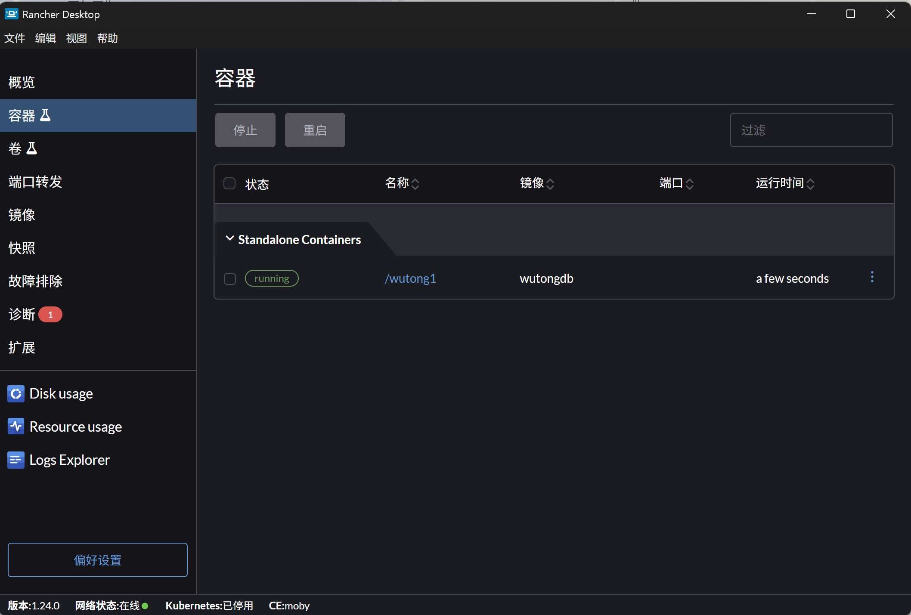
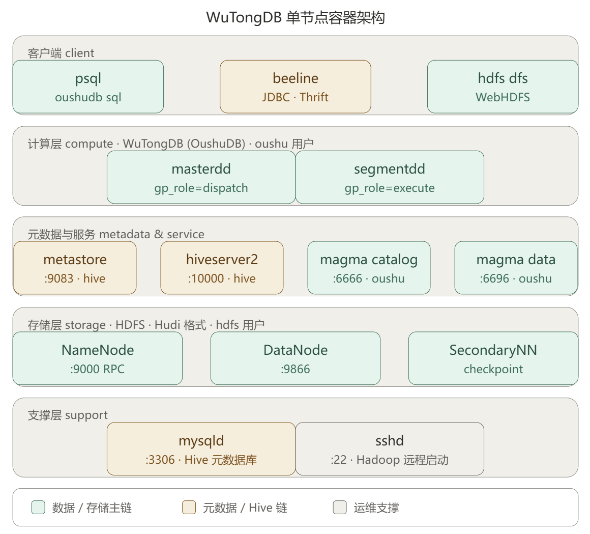
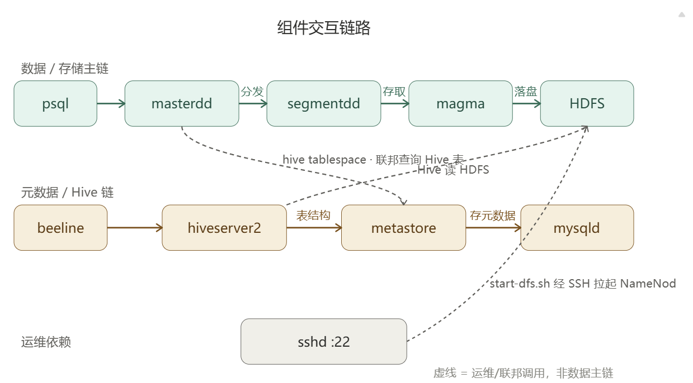
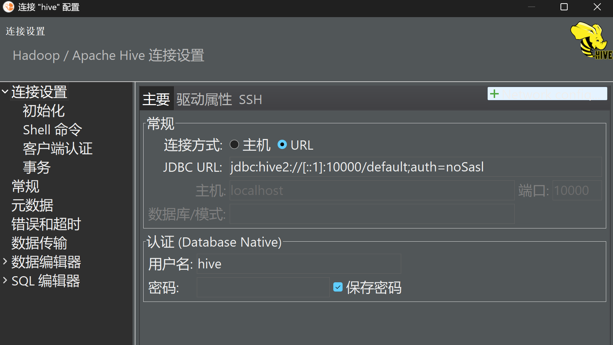
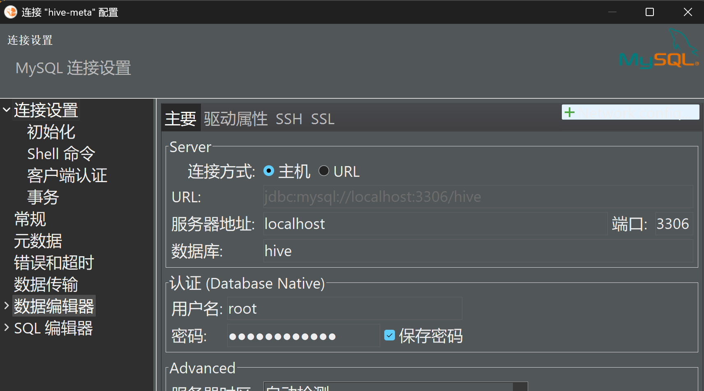
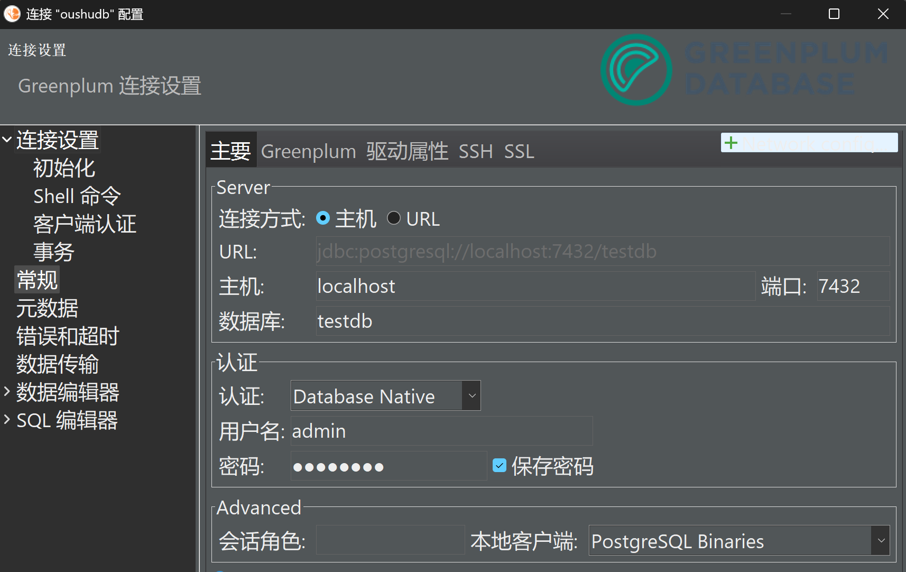
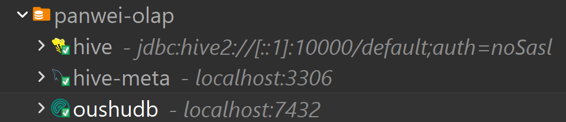

中国移动梧桐数据库（磐维OLAP）初上手
背景
最近我收到了一批关于中国移动梧桐数据库的学习资料。
大概看了下，和GP很像，然后有很多oushudb的痕迹，但是有些文档又称其为磐维数据库。网上搜了下，原来梧桐数据库是中国移动和偶数联合研发，然后在中国移动统一品牌的策略下，梧桐数据库也归到了磐维的品牌下，叫磐维OLAP数据库。
详见以下两篇由"磐维数据库"官方发的资讯
https://www.modb.pro/db/1928439021374550016
https://www.modb.pro/db/1961346000044437504
也就是说以后不能简单说磐维数据库是基于openGauss的了，只能说磐维品牌下有两款数据库（集中式、分布式）是基于openGauss的，有一款数据库（云原生分析型）是从Greenplum发展而来的。
[oushu@wutong1 ~]$ oushudb sql
psql (12.12)
Type "help" for help.
postgres=# select version();
version
---------------------------------------------------------------------------------------------------------------------------------------------------------------------------------------------------------
PostgreSQL 12.12 (OushuDB 6.1.0.0 Enterprise Edition) (Greenplum Database 7.0.0-beta.0+59cc967 build dev) on x86_64-pc-linux-gnu, compiled by g++ (GCC) 12.3.0, 64-bit compiled on Jan 13 2025 18:39:56
(1 row)
postgres=#
安装实验环境
本次实验我在windows上进行，环境是Rancher desktop,不是Docker Desktop（懂得都懂）

在我的环境上按照文档启动实验环境，到启动hdfs时会报错
PS C:\Users\DarkAthena> docker exec -it wutong1 bash
[root@wutong1 /]# su - hdfs
Last login: Mon Sep 7 04:17:21 UTC 2026 on pts/1
[hdfs@wutong1 ~]$ /usr/local/oushu/hdfs/sbin/start-dfs.sh
Starting namenodes on [wutong1]
wutong1: ssh: connect to host wutong1 port 22: Connection refused
Starting datanodes
localhost: ssh: connect to host localhost port 22: Connection refused
Starting secondary namenodes [wutong1]
wutong1: ssh: connect to host wutong1 port 22: Connection refused
[hdfs@wutong1 ~]$
让AI排查了一下
根因分析
报错链路：
start-dfs.sh（Hadoop 脚本）需要通过 SSH 连到wutong1:22来拉起各节点守护进程，但容器里 sshd 根本没在运行，所以 Connection refused。为什么 sshd 没起（手册没讲，也怪不着你）：
层级 事实 镜像 WuTongDB 镜像本质是 CentOS 7（systemd 219，只支持 cgroup v1） 你的环境 Rancher Desktop (WSL2) 新内核在容器 /sys/fs/cgroup上挂载的是 cgroup2（v2）冲突 老 systemd 启动时要建 v1 的 net_cls符号链接 →Operation not permitted→ 打出 "Freezing execution" 后直接冻结（我确认了 PID 1 卡在pause()系统调用，4 分钟没反应）结果 systemd 没起来 → 镜像里配置的 sshd、mysqld 自启全部失效 → 22 端口无监听 验证过程（我用同镜像起了 2 个测试容器，已清理）：
--privileged+--cgroupns=host：无效，systemd 仍冻结- ✅
--tmpfs /sys/fs/cgroup：systemd 正常初始化，sshd、mysqld自动启动（镜像内置自启），HDFS 的 DataNode/SecondaryNameNode 成功拉起，hdfs用户免密 SSH 是镜像预配置好的，无需手工配修复方案
需要重建容器（你的容器刚建还没数据，无损失），只比手册多一个参数
--tmpfs /sys/fs/cgroup：docker rm -f wutong1 docker run -itd --name wutong1 --hostname wutong1 --network wutongdb_net --ip 172.18.0.2 --privileged=true --tmpfs /sys/fs/cgroup wutongdb /usr/sbin/init # 等约 20 秒让 systemd 启动完成，再进容器按手册继续注意容器名/hostname 必须保持
wutong1（镜像 Hadoop 配置写死了）。
HDFS 已完全恢复 —— NameNode/DataNode/SecondaryNameNode 全部在线，Live datanodes (1)正是手册的成功标准。不过 mysqld 这次显示 failed，查一下原因：
修复完成，全链路验证通过。总结如下：结论
根因：WuTongDB 镜像是 CentOS 7（systemd 219，仅支持 cgroup v1），而 Rancher Desktop 新版 WSL2 内核在容器
/sys/fs/cgroup挂的是 cgroup2，老 systemd 建不了 v1 符号链接后直接 "Freezing execution" 冻结 → sshd/mysqld 全没起 →start-dfs.sh走 SSH 连 22 端口被拒。手册漏了兼容性说明。修复：重建容器时加
--tmpfs /sys/fs/cgroup（已执行）：docker run -itd --name wutong1 --hostname wutong1 --network wutongdb_net --ip 172.18.0.2 --privileged=true --tmpfs /sys/fs/cgroup wutongdb /usr/sbin/init当前状态（已实测验证）：
项目 状态 systemd / sshd ✅ 正常，22 端口监听 HDFS ✅ NameNode + DataNode + SecondaryNameNode 全部在线 hdfs dfsadmin -report✅ Live datanodes (1)—— 手册 2.1.2 的成功标准已达成mysqld ✅ 已启动（首启报 File exists，restart 一次即好，见下方备注） 备注
- mysqld 首次启动会失败一次（镜像里残留了旧的 socket/pid 文件，报
Error 17: File exists），执行systemctl restart mysqld即可恢复，之后端口 3306 正常。以后每次重建/重启容器如果发现 mysqld failed，restart 一下就行。- 容器名和 hostname 必须保持
wutong1，镜像 Hadoop 配置写死了。- 如果以后要重建容器，记住带上
--tmpfs /sys/fs/cgroup参数。现在可以直接
docker exec -it wutong1 bash进容器，从手册 2.2 节（Hive） 继续往下操作。
可以顺便把端口都映射出来
docker run -itd -p 7432:7432 -p 10000:10000 -p 3306:3306 -p 9083:9083 -p 9870:9870 --name wutong1 --hostname wutong1 --network wutongdb_net --ip 172.18.0.2 --privileged=true --tmpfs /sys/fs/cgroup wutongdb /usr/sbin/init
另外，如果对hdfs命令不熟的，可能会有下面这种操作（文档里命令自动换行了）
[oushu@wutong1 ~]$ sudo -u hdfs hdfs dfs -ls
ls: `.': No such file or directory
这个是漏传了路径，文档里的完整命令是
sudo -u hdfs hdfs dfs -ls hdfs://wutong1:9000/default_filespace
如果没传，且/user/hdfs目录不存在，就会报上面的错
后续测试记录
下面大概就是检查各种状态，启动各种服务，然后演示了一下跨引擎的两表关联（本库的表和hive库的表）
PS C:\Users\DarkAthena> docker exec -it wutong1 bash
[root@wutong1 /]# su - hdfs
Last login: Mon Sep 7 06:20:50 UTC 2026
[hdfs@wutong1 ~]$ jps
1318 Jps
793 SecondaryNameNode
333 NameNode
494 DataNode
[hdfs@wutong1 ~]$ hdfs dfsadmin -report
Configured Capacity: 1081101176832 (1006.85 GB)
Present Capacity: 979691098112 (912.41 GB)
DFS Remaining: 979691012096 (912.41 GB)
DFS Used: 86016 (84 KB)
DFS Used%: 0.00%
Replicated Blocks:
Under replicated blocks: 4
Blocks with corrupt replicas: 0
Missing blocks: 0
Missing blocks (with replication factor 1): 0
Low redundancy blocks with highest priority to recover: 4
Pending deletion blocks: 0
Erasure Coded Block Groups:
Low redundancy block groups: 0
Block groups with corrupt internal blocks: 0
Missing block groups: 0
Low redundancy blocks with highest priority to recover: 0
Pending deletion blocks: 0
-------------------------------------------------
Live datanodes (1):
Name: 172.18.0.2:9866 (wutong1)
Hostname: wutong1
Decommission Status : Normal
Configured Capacity: 1081101176832 (1006.85 GB)
DFS Used: 86016 (84 KB)
Non DFS Used: 46417723392 (43.23 GB)
DFS Remaining: 979691012096 (912.41 GB)
DFS Used%: 0.00%
DFS Remaining%: 90.62%
Configured Cache Capacity: 0 (0 B)
Cache Used: 0 (0 B)
Cache Remaining: 0 (0 B)
Cache Used%: 100.00%
Cache Remaining%: 0.00%
Xceivers: 0
Last contact: Mon Sep 07 06:23:58 UTC 2026
Last Block Report: Mon Sep 07 06:20:46 UTC 2026
Num of Blocks: 5
[hdfs@wutong1 ~]$ ll
total 4
-rw-rw-r-- 1 hdfs hdfs 2 Mar 13 2025 text
[hdfs@wutong1 ~]$ cat text
1
[hdfs@wutong1 ~]$ exit
logout
[root@wutong1 /]# systemctl status mysqld.service
● mysqld.service - MySQL Server
Loaded: loaded (/usr/lib/systemd/system/mysqld.service; enabled; vendor preset: disabled)
Active: active (running) since Mon 2026-09-07 06:21:03 UTC; 3min 42s ago
Docs: man:mysqld(8)
http://dev.mysql.com/doc/refman/en/using-systemd.html
Process: 1198 ExecStartPre=/usr/bin/mysqld_pre_systemd (code=exited, status=0/SUCCESS)
Main PID: 1219 (mysqld)
Status: "Server is operational"
CGroup: /system.slice/mysqld.service
└─1219 /usr/sbin/mysqld
Sep 07 06:21:02 wutong1 systemd[1]: Starting MySQL Server...
Sep 07 06:21:03 wutong1 systemd[1]: Started MySQL Server.
[root@wutong1 /]# su - hive
Last login: Tue Apr 1 11:59:34 UTC 2025 on pts/1
[hive@wutong1 ~]$ nohup hive --service metastore > /dev/null 2>&1 &
[1] 1489
[hive@wutong1 ~]$ nohup hive --service hiveserver2 > /dev/null 2>&1 &
[2] 1625
[hive@wutong1 ~]$ jps
1491 RunJar
1626 RunJar
2015 Jps
[hive@wutong1 ~]$ hive
SLF4J: Class path contains multiple SLF4J bindings.
SLF4J: Found binding in [jar:file:/usr/local/oushu/hive-3.1.3.2/lib/log4j-slf4j-impl-2.17.1.jar!/org/slf4j/impl/StaticLoggerBinder.class]
SLF4J: Found binding in [jar:file:/usr/local/oushu/hdfs-3.3.4.4/share/hadoop/common/lib/slf4j-reload4j-1.7.36.jar!/org/slf4j/impl/StaticLoggerBinder.class]
SLF4J: See http://www.slf4j.org/codes.html#multiple_bindings for an explanation.
SLF4J: Actual binding is of type [org.apache.logging.slf4j.Log4jLoggerFactory]
which: no hbase in (/usr/lib/jvm/java-1.8.0-openjdk//bin:/usr/local/bin:/bin:/usr/bin:/usr/local/sbin:/usr/sbin:/usr/local/oushu/hive/bin:/usr/local/oushu/hdfs/bin:/usr/local/oushu/hdfs/sbin:/home/hive/.local/bin:/home/hive/bin)
SLF4J: Class path contains multiple SLF4J bindings.
SLF4J: Found binding in [jar:file:/usr/local/oushu/hive-3.1.3.2/lib/log4j-slf4j-impl-2.17.1.jar!/org/slf4j/impl/StaticLoggerBinder.class]
SLF4J: Found binding in [jar:file:/usr/local/oushu/hdfs-3.3.4.4/share/hadoop/common/lib/slf4j-reload4j-1.7.36.jar!/org/slf4j/impl/StaticLoggerBinder.class]
SLF4J: See http://www.slf4j.org/codes.html#multiple_bindings for an explanation.
SLF4J: Actual binding is of type [org.apache.logging.slf4j.Log4jLoggerFactory]
Hive Session ID = 2554478e-65e1-4ccb-a508-6b2089d92739
Logging initialized using configuration in file:/usr/local/oushu/conf/hive/hive-log4j2.properties Async: true
Hive-on-MR is deprecated in Hive 2 and may not be available in the future versions. Consider using a different execution engine (i.e. spark, tez) or using Hive 1.X releases.
Hive Session ID = f0fb36e2-858c-48b1-a919-44973e0addc4
hive> create table tt1(c1 int); # 先在hive里建张表，插入数据
OK
Time taken: 0.871 seconds
hive> insert into tt1 values(1);
Automatically selecting local only mode for query
Query ID = hive_20260907062557_2ff16071-e78c-4635-a0b1-94df520349a8
Total jobs = 3
Launching Job 1 out of 3
Number of reduce tasks determined at compile time: 1
In order to change the average load for a reducer (in bytes):
set hive.exec.reducers.bytes.per.reducer=<number>
In order to limit the maximum number of reducers:
set hive.exec.reducers.max=<number>
In order to set a constant number of reducers:
set mapreduce.job.reduces=<number>
Job running in-process (local Hadoop)
2026-09-07 06:26:02,153 Stage-1 map = 0%, reduce = 0%
2026-09-07 06:26:03,168 Stage-1 map = 100%, reduce = 100%
Ended Job = job_local94723927_0001
Stage-4 is selected by condition resolver.
Stage-3 is filtered out by condition resolver.
Stage-5 is filtered out by condition resolver.
Moving data to directory hdfs://wutong1:9000/user/hive/warehouse/tt1/.hive-staging_hive_2026-09-07_06-25-57_985_8177300734127481255-1/-ext-10000
Loading data to table default.tt1
MapReduce Jobs Launched:
Stage-Stage-1: HDFS Read: 0 HDFS Write: 269 SUCCESS
Total MapReduce CPU Time Spent: 0 msec
OK
Time taken: 5.68 seconds
hive> select * from t1;
FAILED: SemanticException [Error 10001]: Line 1:14 Table not found 't1'
hive> select * from tt1;
OK
1
Time taken: 0.159 seconds, Fetched: 1 row(s)
hive> exit;
[hive@wutong1 ~]$ logout
[root@wutong1 /]# su - oushu
Last login: Tue Apr 1 12:00:14 UTC 2025 on pts/1
[oushu@wutong1 ~]$ magma start cluster
20260907:06:26:40:002468 magma:wutong1:oushu-[INFO]:-Log file: /usr/local/oushu/log/oushudb/admin/magma_20260907.log
20260907:06:26:40:002468 magma:wutong1:oushu-[INFO]:-Prepare to do 'magma start cluster'
20260907:06:26:40:002468 magma:wutong1:oushu-[INFO]:-OUSHUDB_CONF is set to: /usr/local/oushu/conf/oushudb
20260907:06:26:40:002468 magma:wutong1:oushu-[INFO]:-start all magma nodes
20260907:06:26:40:002468 magma:wutong1:oushu-[INFO]:-mkdir -p /usr/local/oushu/log/oushudb/admin; /usr/local/oushu/oushudb-6.1.0.0/bin/magma_ctl --ctl=start --label=regionA.zoneA --index=0 --vsc=vsc_catalog --logdir=/usr/local/oushu/log/oushudb/vsc_catalog >> /usr/local/oushu/log/oushudb/admin/magma_20260907.log 2>&1
20260907:06:26:40:002468 magma:wutong1:oushu-[INFO]:-start magma node on host: 172.18.0.2
20260907:06:26:40:002468 magma:wutong1:oushu-[INFO]:-mkdir -p /usr/local/oushu/log/oushudb/admin; /usr/local/oushu/oushudb-6.1.0.0/bin/magma_ctl --ctl=start --label=regionA.zoneA --index=0 --vsc=vsc_default --logdir=/usr/local/oushu/log/oushudb/vsc_default >> /usr/local/oushu/log/oushudb/admin/magma_20260907.log 2>&1
20260907:06:26:40:002468 magma:wutong1:oushu-[INFO]:-start magma node on host: 172.18.0.2
20260907:06:26:40:002468 magma:wutong1:oushu-[INFO]:-0.00% of jobs completed
20260907:06:26:40:002468 magma:wutong1:oushu-[INFO]:-100.00% of jobs completed
...........
20260907:06:26:52:002468 magma:wutong1:oushu-[INFO]:-Magma service start successfully
[oushu@wutong1 ~]$ magma status
20260907:06:26:55:003375 magma:wutong1:oushu-[INFO]:-Log file: /usr/local/oushu/log/oushudb/admin/magma_20260907.log
================ Magma Nodes Status ================
nodeaddress: 172.18.0.2:6666
topo: regionA.zoneA
vscname: vsc_catalog
compactstatus: 0,0,0,0
healthy: healthy
replicastatus:
RG:id=0,isLeader=1,raftGroupId=raft_0_group,raftMembers=(0),status=serving
RG:id=1,isLeader=1,raftGroupId=raft_1_group,raftMembers=(),status=replicating
RG:id=2,isLeader=1,raftGroupId=raft_2_group,raftMembers=(2),status=serving
RG:id=3,isLeader=1,raftGroupId=raft_3_group,raftMembers=(3),status=serving
nodeaddress: 172.18.0.2:6696
topo: regionA.zoneA
vscname: vsc_default
compactstatus: 0,0,0,0
healthy: healthy
replicastatus:
RG:id=4,isLeader=1,raftGroupId=raft_4_group,raftMembers=(4),status=serving
RG:id=5,isLeader=1,raftGroupId=raft_5_group,raftMembers=(5),status=serving
RG:id=6,isLeader=1,raftGroupId=raft_6_group,raftMembers=(6),status=serving
RG:id=7,isLeader=1,raftGroupId=raft_7_group,raftMembers=(7),status=serving
RG:id=8,isLeader=1,raftGroupId=raft_8_group,raftMembers=(8),status=serving
RG:id=9,isLeader=1,raftGroupId=raft_9_group,raftMembers=(),status=replicating
RG:id=10,isLeader=1,raftGroupId=raft_10_group,raftMembers=(10),status=serving
RG:id=11,isLeader=1,raftGroupId=raft_11_group,raftMembers=(11),status=serving
RG:id=12,isLeader=1,raftGroupId=raft_12_group,raftMembers=(12),status=serving
RG:id=13,isLeader=1,raftGroupId=raft_13_group,raftMembers=(13),status=serving
RG:id=14,isLeader=1,raftGroupId=raft_14_group,raftMembers=(14),status=serving
RG:id=15,isLeader=1,raftGroupId=raft_15_group,raftMembers=(15),status=serving
================ Magma Vsc Status ================
name: vsc_catalog
nodes: 172.18.0.2:6666
replicanum: 3
bucketnum: 3
replicalocations: regionA.zoneA:3
leaderpreferences: regionA.zoneA
replicaplacement:
regionA.zoneA: leadernum=4, followernum=0
serviceinfo: bucketnum=3, serviceable=true, extrainfo=""
unavailablenodes:
underreplica:
raft_0_group: members=172.18.0.2:6666
raft_1_group: members=172.18.0.2:6666
raft_2_group: members=172.18.0.2:6666
raft_3_group: members=172.18.0.2:6666
overreplica:
name: vsc_default
nodes: 172.18.0.2:6696
replicanum: 3
bucketnum: 12
replicalocations: regionA.zoneA:3
leaderpreferences: regionA.zoneA
replicaplacement:
regionA.zoneA: leadernum=12, followernum=0
serviceinfo: bucketnum=12, serviceable=true, extrainfo=""
unavailablenodes:
underreplica:
raft_6_group: members=172.18.0.2:6696
raft_13_group: members=172.18.0.2:6696
raft_10_group: members=172.18.0.2:6696
raft_7_group: members=172.18.0.2:6696
raft_14_group: members=172.18.0.2:6696
raft_4_group: members=172.18.0.2:6696
raft_11_group: members=172.18.0.2:6696
raft_8_group: members=172.18.0.2:6696
raft_15_group: members=172.18.0.2:6696
raft_5_group: members=172.18.0.2:6696
raft_12_group: members=172.18.0.2:6696
raft_9_group: members=172.18.0.2:6696
overreplica:
[oushu@wutong1 ~]$ oushudb ps
1626 1625 06:25:18 11.6 673568 /usr/java/default/bin/java -Dproc_jar -Xloggc:/usr/local/oushu/log/hive/hiveserver2-gc-%t.log -XX:+UseG1GC -XX:+PrintGCDetails -XX:+PrintGCTimeStamps -XX:+PrintGCCause -XX:+UseGCLogFileRotation -XX:NumberOfGCLogFiles=10 -XX:GCLogFileSize=10M -XX:+HeapDumpOnOutOfMemoryError -XX:HeapDumpPath=/usr/local/oushu/log/hive/hs2_heapdump.hprof -Dhive.log.dir=/usr/local/oushu/log/hive -Dhive.log.file=hiveserver2.log -Dproc_hiveserver2 -Xmx512m -Xmx512m -Dlog4j2.formatMsgNoLookups=true -Xmx1418m -Dlog4j.configurationFile=hive-log4j2.properties -Djava.util.logging.config.file=/usr/local/oushu/conf/hive/parquet-logging.properties -Djline.terminal=jline.UnsupportedTerminal -Dyarn.log.dir=/usr/local/oushu/log/hadoop -Dyarn.log.file=hadoop.log -Dyarn.home.dir=/usr/local/oushu/yarn -Dyarn.root.logger=INFO,console -Djava.library.path=/usr/local/oushu/hdfs/lib/native -Dhadoop.log.dir=/usr/local/oushu/log/hadoop -Dhadoop.log.file=hadoop.log -Dhadoop.home.dir=/usr/local/oushu/hdfs -Dhadoop.id.str=hive -Dhadoop.root.logger=INFO,console -Dhadoop.policy.file=hadoop-policy.xml -Dhadoop.security.logger=INFO,NullAppender org.apache.hadoop.util.RunJar /usr/local/oushu/hive/lib/hive-service-3.1.3.jar org.apache.hive.service.server.HiveServer2 --hiveconf hive.aux.jars.path=file:///usr/local/oushu/hive/lib/HikariCP-2.6.1.jar /usr/local/oushu/hive/lib/JavaEWAH-0.3.2.jar /usr/local/oushu/hive/lib/RoaringBitmap-0.5.11.jar /usr/local/oushu/hive/lib/ST4-4.0.4.jar /usr/local/oushu/hive/lib/accumulo-core-1.7.3.jar /usr/local/oushu/hive/lib/accumulo-fate-1.7.3.jar /usr/local/oushu/hive/lib/accumulo-start-1.7.3.jar /usr/local/oushu/hive/lib/accumulo-trace-1.7.3.jar /usr/local/oushu/hive/lib/aircompressor-0.10.jar /usr/local/oushu/hive/lib/animal-sniffer-annotations-1.17.jar /usr/local/oushu/hive/lib/ant-1.9.1.jar /usr/local/oushu/hive/lib/ant-launcher-1.9.1.jar /usr/local/oushu/hive/lib/antlr-runtime-3.5.2.jar /usr/local/oushu/hive/lib/antlr4-runtime-4.5.jar /usr/local/oushu/hive/lib/aopalliance-repackaged-2.5.0-b32.jar /usr/local/oushu/hive/lib/apache-curator-2.12.0.pom /usr/local/oushu/hive/lib/apache-jsp-9.3.20.v20170531.jar /usr/local/oushu/hive/lib/apache-jstl-9.3.20.v20170531.jar /usr/local/oushu/hive/lib/arrow-format-0.8.0.jar /usr/local/oushu/hive/lib/arrow-memory-0.8.0.jar /usr/local/oushu/hive/lib/arrow-vector-0.8.0.jar /usr/local/oushu/hive/lib/asm-5.0.1.jar /usr/local/oushu/hive/lib/asm-commons-5.0.1.jar /usr/local/oushu/hive/lib/asm-tree-5.0.1.jar /usr/local/oushu/hive/lib/audience-annotations-0.5.0.jar /usr/local/oushu/hive/lib/avatica-1.11.0.jar /usr/local/oushu/hive/lib/avro-1.8.2.jar /usr/local/oushu/hive/lib/avro-ipc-1.8.2.jar /usr/local/oushu/hive/lib/avro-mapred-1.8.2-hadoop2.jar /usr/local/oushu/hive/lib/bonecp-0.8.0.RELEASE.jar /usr/local/oushu/hive/lib/calcite-core-1.16.0.jar /usr/local/oushu/hive/lib/calcite-druid-1.16.0.jar /usr/local/oushu/hive/lib/calcite-linq4j-1.16.0.jar /usr/local/oushu/hive/lib/checker-qual-2.5.2.jar /usr/local/oushu/hive/lib/chill-java-0.8.4.jar /usr/local/oushu/hive/lib/chill_2.11-0.8.4.jar /usr/local/oushu/hive/lib/commons-cli-1.2.jar /usr/local/oushu/hive/lib/commons-codec-1.15.jar /usr/local/oushu/hive/lib/commons-collections4-4.1.jar /usr/local/oushu/hive/lib/commons-compiler-2.7.6.jar /usr/local/oushu/hive/lib/commons-compress-1.19.jar /usr/local/oushu/hive/lib/commons-crypto-1.0.0.jar /usr/local/oushu/hive/lib/commons-dbcp-1.4.jar /usr/local/oushu/hive/lib/commons-io-2.6.jar /usr/local/oushu/hive/lib/commons-lang-2.6.jar /usr/local/oushu/hive/lib/commons-lang3-3.9.jar /usr/local/oushu/hive/lib/commons-logging-1.0.4.jar /usr/local/oushu/hive/lib/commons-math-2.1.jar /usr/local/oushu/hive/lib/commons-math3-3.6.1.jar /usr/local/oushu/hive/lib/commons-pool-1.5.4.jar /usr/local/oushu/hive/lib/commons-vfs2-2.1.jar /usr/local/oushu/hive/lib/compress-lzf-1.0.3.jar /usr/local/oushu/hive/lib/curator-client-2.12.0.jar /usr/local/oushu/hive/lib/curator-framework-2.12.0.jar /usr/local/oushu/hive/lib/curator-recipes-2.12.0.jar /usr/local/oushu/hive/lib/datanucleus-api-jdo-4.2.4.jar /usr/local/oushu/hive/lib/datanucleus-core-4.1.17.jar /usr/local/oushu/hive/lib/datanucleus-rdbms-4.1.19.jar /usr/local/oushu/hive/lib/derby-10.14.1.0.jar /usr/local/oushu/hive/lib/disruptor-3.3.6.jar /usr/local/oushu/hive/lib/dropwizard-metrics-hadoop-metrics2-reporter-0.1.2.jar /usr/local/oushu/hive/lib/druid-hdfs-storage-0.12.0.jar /usr/local/oushu/hive/lib/ecj-4.4.2.jar /usr/local/oushu/hive/lib/error_prone_annotations-2.2.0.jar /usr/local/oushu/hive/lib/esri-geometry-api-2.0.0.jar /usr/local/oushu/hive/lib/failureaccess-1.0.jar /usr/local/oushu/hive/lib/findbugs-annotations-1.3.9-1.jar /usr/local/oushu/hive/lib/flatbuffers-1.2.0-3f79e055.jar /usr/local/oushu/hive/lib/groovy-all-2.4.11.jar /usr/local/oushu/hive/lib/gson-2.2.4.jar /usr/local/oushu/hive/lib/guava-27.0-jre.jar /usr/local/oushu/hive/lib/hbase-client-2.0.0-alpha4.jar /usr/local/oushu/hive/lib/hbase-common-2.0.0-alpha4-tests.jar /usr/local/oushu/hive/lib/hbase-common-2.0.0-alpha4.jar /usr/local/oushu/hive/lib/hbase-hadoop-compat-2.0.0-alpha4.jar /usr/local/oushu/hive/lib/hbase-hadoop2-compat-2.0.0-alpha4-tests.jar /usr/local/oushu/hive/lib/hbase-hadoop2-compat-2.0.0-alpha4.jar /usr/local/oushu/hive/lib/hbase-http-2.0.0-alpha4.jar /usr/local/oushu/hive/lib/hbase-mapreduce-2.0.0-alpha4.jar /usr/local/oushu/hive/lib/hbase-metrics-2.0.0-alpha4.jar /usr/local/oushu/hive/lib/hbase-metrics-api-2.0.0-alpha4.jar /usr/local/oushu/hive/lib/hbase-prefix-tree-2.0.0-alpha4.jar /usr/local/oushu/hive/lib/hbase-procedure-2.0.0-alpha4.jar /usr/local/oushu/hive/lib/hbase-protocol-2.0.0-alpha4.jar /usr/local/oushu/hive/lib/hbase-protocol-shaded-2.0.0-alpha4.jar /usr/local/oushu/hive/lib/hbase-replication-2.0.0-alpha4.jar /usr/local/oushu/hive/lib/hbase-server-2.0.0-alpha4.jar /usr/local/oushu/hive/lib/hbase-shaded-miscellaneous-1.0.1.jar /usr/local/oushu/hive/lib/hbase-shaded-netty-1.0.1.jar /usr/local/oushu/hive/lib/hbase-shaded-protobuf-1.0.1.jar /usr/local/oushu/hive/lib/hive-accumulo-handler-3.1.3.jar /usr/local/oushu/hive/lib/hive-beeline-3.1.3.jar /usr/local/oushu/hive/lib/hive-classification-3.1.3.jar /usr/local/oushu/hive/lib/hive-cli-3.1.3.jar /usr/local/oushu/hive/lib/hive-common-3.1.3.jar /usr/local/oushu/hive/lib/hive-contrib-3.1.3.jar /usr/local/oushu/hive/lib/hive-druid-handler-3.1.3.jar /usr/local/oushu/hive/lib/hive-exec-3.1.3.jar /usr/local/oushu/hive/lib/hive-hbase-handler-3.1.3.jar /usr/local/oushu/hive/lib/hive-hcatalog-core-3.1.3.jar /usr/local/oushu/hive/lib/hive-hcatalog-server-extensions-3.1.3.jar /usr/local/oushu/hive/lib/hive-hplsql-3.1.3.jar /usr/local/oushu/hive/lib/hive-jdbc-3.1.3.jar /usr/local/oushu/hive/lib/hive-jdbc-handler-3.1.3.jar /usr/local/oushu/hive/lib/hive-kryo-registrator-3.1.3.jar /usr/local/oushu/hive/lib/hive-llap-client-3.1.3.jar /usr/local/oushu/hive/lib/hive-llap-common-3.1.3-tests.jar /usr/local/oushu/hive/lib/hive-llap-common-3.1.3.jar /usr/local/oushu/hive/lib/hive-llap-ext-client-3.1.3.jar /usr/local/oushu/hive/lib/hive-llap-server-3.1.3.jar /usr/local/oushu/hive/lib/hive-llap-tez-3.1.3.jar /usr/local/oushu/hive/lib/hive-metastore-3.1.3.jar /usr/local/oushu/hive/lib/hive-serde-3.1.3.jar /usr/local/oushu/hive/lib/hive-service-3.1.3.jar /usr/local/oushu/hive/lib/hive-service-rpc-3.1.3.jar /usr/local/oushu/hive/lib/hive-shims-0.23-3.1.3.jar /usr/local/oushu/hive/lib/hive-shims-3.1.3.jar /usr/local/oushu/hive/lib/hive-shims-common-3.1.3.jar /usr/local/oushu/hive/lib/hive-shims-scheduler-3.1.3.jar /usr/local/oushu/hive/lib/hive-spark-client-3.1.3.jar /usr/local/oushu/hive/lib/hive-standalone-metastore-3.1.3.jar /usr/local/oushu/hive/lib/hive-storage-api-2.7.0.jar /usr/local/oushu/hive/lib/hive-streaming-3.1.3.jar /usr/local/oushu/hive/lib/hive-testutils-3.1.3.jar /usr/local/oushu/hive/lib/hive-upgrade-acid-3.1.3.jar /usr/local/oushu/hive/lib/hive-vector-code-gen-3.1.3.jar /usr/local/oushu/hive/lib/hk2-api-2.5.0-b32.jar /usr/local/oushu/hive/lib/hk2-locator-2.5.0-b32.jar /usr/local/oushu/hive/lib/hk2-utils-2.5.0-b32.jar /usr/local/oushu/hive/lib/hppc-0.7.2.jar /usr/local/oushu/hive/lib/htrace-core-3.2.0-incubating.jar /usr/local/oushu/hive/lib/httpclient-4.5.13.jar /usr/local/oushu/hive/lib/httpcore-4.4.13.jar /usr/local/oushu/hive/lib/ivy-2.4.0.jar /usr/local/oushu/hive/lib/j2objc-annotations-1.1.jar /usr/local/oushu/hive/lib/jackson-annotations-2.12.0.jar /usr/local/oushu/hive/lib/jackson-core-2.12.0.jar /usr/local/oushu/hive/lib/jackson-core-asl-1.9.13.jar /usr/local/oushu/hive/lib/jackson-databind-2.12.0.jar /usr/local/oushu/hive/lib/jackson-dataformat-smile-2.12.0.jar /usr/local/oushu/hive/lib/jackson-mapper-asl-1.9.13.jar /usr/local/oushu/hive/lib/jackson-module-scala_2.11-2.12.0.jar /usr/local/oushu/hive/lib/jamon-runtime-2.3.1.jar /usr/local/oushu/hive/lib/janino-2.7.6.jar /usr/local/oushu/hive/lib/javassist-3.20.0-GA.jar /usr/local/oushu/hive/lib/javax.annotation-api-1.2.jar /usr/local/oushu/hive/lib/javax.inject-2.5.0-b32.jar /usr/local/oushu/hive/lib/javax.jdo-3.2.0-m3.jar /usr/local/oushu/hive/lib/javax.servlet-api-3.1.0.jar /usr/local/oushu/hive/lib/javax.servlet.jsp-2.3.2.jar /usr/local/oushu/hive/lib/javax.servlet.jsp-api-2.3.1.jar /usr/local/oushu/hive/lib/javax.ws.rs-api-2.0.1.jar /usr/local/oushu/hive/lib/javolution-5.5.1.jar /usr/local/oushu/hive/lib/jaxb-api-2.2.11.jar /usr/local/oushu/hive/lib/jcodings-1.0.18.jar /usr/local/oushu/hive/lib/jcommander-1.32.jar /usr/local/oushu/hive/lib/jdo-api-3.0.1.jar /usr/local/oushu/hive/lib/jersey-client-2.25.1.jar /usr/local/oushu/hive/lib/jersey-common-2.25.1.jar /usr/local/oushu/hive/lib/jersey-container-servlet-core-2.25.1.jar /usr/local/oushu/hive/lib/jersey-guava-2.25.1.jar /usr/local/oushu/hive/lib/jersey-media-jaxb-2.25.1.jar /usr/local/oushu/hive/lib/jersey-server-2.25.1.jar /usr/local/oushu/hive/lib/jettison-1.1.jar /usr/local/oushu/hive/lib/jetty-annotations-9.3.20.v20170531.jar /usr/local/oushu/hive/lib/jetty-client-9.3.20.v20170531.jar /usr/local/oushu/hive/lib/jetty-http-9.3.20.v20170531.jar /usr/local/oushu/hive/lib/jetty-io-9.3.20.v20170531.jar /usr/local/oushu/hive/lib/jetty-jaas-9.3.20.v20170531.jar /usr/local/oushu/hive/lib/jetty-jndi-9.3.20.v20170531.jar /usr/local/oushu/hive/lib/jetty-plus-9.3.20.v20170531.jar /usr/local/oushu/hive/lib/jetty-rewrite-9.3.20.v20170531.jar /usr/local/oushu/hive/lib/jetty-runner-9.3.20.v20170531.jar /usr/local/oushu/hive/lib/jetty-schemas-3.1.jar /usr/local/oushu/hive/lib/jetty-security-9.3.20.v20170531.jar /usr/local/oushu/hive/lib/jetty-server-9.3.20.v20170531.jar /usr/local/oushu/hive/lib/jetty-servlet-9.3.20.v20170531.jar /usr/local/oushu/hive/lib/jetty-util-9.3.20.v20170531.jar /usr/local/oushu/hive/lib/jetty-webapp-9.3.20.v20170531.jar /usr/local/oushu/hive/lib/jetty-xml-9.3.20.v20170531.jar /usr/local/oushu/hive/lib/jline-2.12.jar /usr/local/oushu/hive/lib/joda-time-2.9.9.jar /usr/local/oushu/hive/lib/jodd-core-3.5.2.jar /usr/local/oushu/hive/lib/joni-2.1.11.jar /usr/local/oushu/hive/lib/jpam-1.1.jar /usr/local/oushu/hive/lib/json-1.8.jar /usr/local/oushu/hive/lib/json4s-ast_2.11-3.2.11.jar /usr/local/oushu/hive/lib/json4s-core_2.11-3.2.11.jar /usr/local/oushu/hive/lib/json4s-jackson_2.11-3.2.11.jar /usr/local/oushu/hive/lib/jsr305-3.0.0.jar /usr/local/oushu/hive/lib/jta-1.1.jar /usr/local/oushu/hive/lib/kryo-shaded-3.0.3.jar /usr/local/oushu/hive/lib/libfb303-0.9.3.jar /usr/local/oushu/hive/lib/libthrift-0.9.3.jar /usr/local/oushu/hive/lib/listenablefuture-9999.0-empty-to-avoid-conflict-with-guava.jar /usr/local/oushu/hive/lib/log4j-1.2-api-2.17.1.jar /usr/local/oushu/hive/lib/log4j-api-2.17.1.jar /usr/local/oushu/hive/lib/log4j-core-2.17.1.jar /usr/local/oushu/hive/lib/log4j-slf4j-impl-2.17.1.jar /usr/local/oushu/hive/lib/log4j-web-2.17.1.jar /usr/local/oushu/hive/lib/lz4-java-1.4.0.jar /usr/local/oushu/hive/lib/memory-0.9.0.jar /usr/local/oushu/hive/lib/metrics-core-3.1.0.jar /usr/local/oushu/hive/lib/metrics-graphite-3.1.5.jar /usr/local/oushu/hive/lib/metrics-json-3.1.0.jar /usr/local/oushu/hive/lib/metrics-jvm-3.1.0.jar /usr/local/oushu/hive/lib/minlog-1.3.0.jar /usr/local/oushu/hive/lib/mysql-connector-java.jar /usr/local/oushu/hive/lib/mysql-metadata-storage-0.12.0.jar /usr/local/oushu/hive/lib/netty-3.10.5.Final.jar /usr/local/oushu/hive/lib/netty-all-4.1.17.Final.jar /usr/local/oushu/hive/lib/netty-buffer-4.1.17.Final.jar /usr/local/oushu/hive/lib/netty-codec-4.1.77.Final.jar /usr/local/oushu/hive/lib/netty-common-4.1.17.Final.jar /usr/local/oushu/hive/lib/netty-handler-4.1.77.Final.jar /usr/local/oushu/hive/lib/netty-resolver-4.1.77.Final.jar /usr/local/oushu/hive/lib/netty-transport-4.1.77.Final.jar /usr/local/oushu/hive/lib/netty-transport-classes-epoll-4.1.77.Final.jar /usr/local/oushu/hive/lib/netty-transport-native-epoll-4.1.77.Final.jar /usr/local/oushu/hive/lib/netty-transport-native-unix-common-4.1.77.Final.jar /usr/local/oushu/hive/lib/objenesis-2.1.jar /usr/local/oushu/hive/lib/opencsv-2.3.jar /usr/local/oushu/hive/lib/opencsv-3.9.jar /usr/local/oushu/hive/lib/orc-core-1.5.8.jar /usr/local/oushu/hive/lib/orc-shims-1.5.8.jar /usr/local/oushu/hive/lib/orc-tools-1.5.8.jar /usr/local/oushu/hive/lib/org.abego.treelayout.core-1.0.1.jar /usr/local/oushu/hive/lib/osgi-resource-locator-1.0.1.jar /usr/local/oushu/hive/lib/paranamer-2.7.jar /usr/local/oushu/hive/lib/parquet-hadoop-bundle-1.10.0.jar /usr/local/oushu/hive/lib/php /usr/local/oushu/hive/lib/postgresql-9.4.1208.jre7.jar /usr/local/oushu/hive/lib/postgresql-metadata-storage-0.12.0.jar /usr/local/oushu/hive/lib/protobuf-java-2.5.0.jar /usr/local/oushu/hive/lib/py /usr/local/oushu/hive/lib/py4j-0.10.6.jar /usr/local/oushu/hive/lib/pyrolite-4.13.jar /usr/local/oushu/hive/lib/scala-compiler-2.11.0.jar /usr/local/oushu/hive/lib/scala-library-2.11.8.jar /usr/local/oushu/hive/lib/scala-parser-combinators_2.11-1.0.1.jar /usr/local/oushu/hive/lib/scala-reflect-2.11.0.jar /usr/local/oushu/hive/lib/scala-xml_2.11-1.0.1.jar /usr/local/oushu/hive/lib/scalap-2.11.0.jar /usr/local/oushu/hive/lib/sketches-core-0.9.0.jar /usr/local/oushu/hive/lib/snappy-java-1.1.4.jar /usr/local/oushu/hive/lib/spark-core_2.11-2.3.0.jar /usr/local/oushu/hive/lib/spark-kvstore_2.11-2.3.0.jar /usr/local/oushu/hive/lib/spark-launcher_2.11-2.3.0.jar /usr/local/oushu/hive/lib/spark-network-common_2.11-2.3.0.jar /usr/local/oushu/hive/lib/spark-network-shuffle_2.11-2.3.0.jar /usr/local/oushu/hive/lib/spark-tags_2.11-2.3.0.jar /usr/local/oushu/hive/lib/spark-unsafe_2.11-2.3.0.jar /usr/local/oushu/hive/lib/sqlline-1.3.0.jar /usr/local/oushu/hive/lib/stax-api-1.0.1.jar /usr/local/oushu/hive/lib/stream-2.7.0.jar /usr/local/oushu/hive/lib/super-csv-2.2.0.jar /usr/local/oushu/hive/lib/taglibs-standard-impl-1.2.5.jar /usr/local/oushu/hive/lib/taglibs-standard-spec-1.2.5.jar /usr/local/oushu/hive/lib/tempus-fugit-1.1.jar /usr/local/oushu/hive/lib/threetenbp-1.3.5.jar /usr/local/oushu/hive/lib/transaction-api-1.1.jar /usr/local/oushu/hive/lib/unused-1.0.0.jar /usr/local/oushu/hive/lib/validation-api-1.1.0.Final.jar /usr/local/oushu/hive/lib/velocity-1.7.jar /usr/local/oushu/hive/lib/websocket-api-9.3.20.v20170531.jar /usr/local/oushu/hive/lib/websocket-client-9.3.20.v20170531.jar /usr/local/oushu/hive/lib/websocket-common-9.3.20.v20170531.jar /usr/local/oushu/hive/lib/websocket-server-9.3.20.v20170531.jar /usr/local/oushu/hive/lib/websocket-servlet-9.3.20.v20170531.jar /usr/local/oushu/hive/lib/xbean-asm5-shaded-4.4.jar /usr/local/oushu/hive/lib/xz-1.5.jar /usr/local/oushu/hive/lib/zookeeper-3.5.10.jar /usr/local/oushu/hive/lib/zookeeper-jute-3.5.10.jar /usr/local/oushu/hive/lib/zstd-jni-1.3.2-2.jar
2558 1 06:26:40 6.7 788112 /usr/local/oushu/oushudb-6.1.0.0/bin/magma_server --confpath=/usr/local/oushu/conf/oushudb --listen=172.18.0.2:6666 --topo=regionA.zoneA --datadirs=/data01/oushudb/magma_catalog --logdir=/usr/local/oushu/log/oushudb/vsc_catalog --vscname=vsc_catalog
2559 1 06:26:40 10.8 2062436 /usr/local/oushu/oushudb-6.1.0.0/bin/magma_server --join=172.18.0.2:6666 --confpath=/usr/local/oushu/conf/oushudb --listen=172.18.0.2:6696 --topo=regionA.zoneA --datadirs=/data01/oushudb/magma_data --logdir=/usr/local/oushu/log/oushudb/vsc_default --vscname=vsc_default
3501 1 06:28:21 11.3 428688 /usr/local/oushu/oushudb-6.1.0.0/bin/postgres -D /data01/oushudb/segmentdd -c gp_role=execute
3655 1 06:28:21 14.5 493792 /usr/local/oushu/oushudb-6.1.0.0/bin/postgres -D /data01/oushudb/masterdd -c gp_role=dispatch
[oushu@wutong1 ~]$ oushudb sql
psql (12.12)
Type "help" for help.
postgres=# \l
List of databases
Name | Owner | Encoding | Collate | Ctype | Access privileges
-----------+-------+----------+---------+-------+-------------------
postgres | oushu | UTF8 | C | C |
template0 | oushu | UTF8 | C | C | =c/oushu +
| | | | | oushu=CTc/oushu
template1 | oushu | UTF8 | C | C | =c/oushu +
| | | | | oushu=CTc/oushu
(3 rows)
postgres=# create database testdb;
CREATE DATABASE
postgres=# \c testdb;
You are now connected to database "testdb" as user "oushu".
testdb=# create table rank1 (id int);
NOTICE: using default RANDOM distribution since no distribution was specified
HINT: Consider including the 'DISTRIBUTED BY' clause to determine the distribution of rows.
CREATE TABLE
testdb=# insert into rank1 select generate_series(1, 5, 1);
INSERT 0 5
testdb=# select * from rank1;
id
----
1
5
2
3
4
(5 rows)
testdb=# create tablespace hive location 'hive://wutong1:9083&database=default'; #创建表空间，指向hive
CREATE TABLESPACE
testdb=# create schema hive tablespace hive; #创建schema ，执行hive表空间
CREATE SCHEMA
testdb=# select * from hive.tt1; # 可以直接查hive里的表
c1
----
1
(1 row)
testdb=# select * from rank1,hive.tt1; # 也可以联邦查询
id | c1
----+----
1 | 1
5 | 1
2 | 1
3 | 1
4 | 1
(5 rows)
testdb=# explain analyze select * from rank1,hive.tt1;
QUERY PLAN
---------------------------------------------------------------------------------------------------------------------------------------
Gather Motion 4:1 (slice1; segments: 4) (cost=0.00..1324032.14 rows=5 width=8) (actual time=9.352..10.589 rows=5 loops=1)
-> Nested Loop (cost=0.00..1324032.14 rows=2 width=8) (actual time=8.730..10.063 rows=4 loops=1)
Join Filter: true
-> Broadcast Motion 4:4 (slice2; segments: 4) (cost=0.00..431.00 rows=1 width=4) (actual time=3.996..3.998 rows=1 loops=1)
-> Foreign Scan on tt1 (cost=0.00..431.00 rows=1 width=4) (actual time=5.811..5.815 rows=1 loops=1)
-> Seq Scan on rank1 (cost=0.00..431.00 rows=2 width=4) (actual time=1.416..3.126 rows=2 loops=2)
(seg1) InputStream Info: 350 byte(s) (22.252 MB/s) in 0.015 ms with 6 read call(s).
(seg1) Cache Read: 350 / 350, 100%
(seg1) ReadStatsOnly Scan 0 in 0 stripe(s).
(seg1) Predicate Info: Expect to scan 0 stripe(s). Filter out 0 stripe(s).
(seg1) MergeRead Info [i,u,d]: [5, 0, 0] merged into [5, 0] tuples in [0, 0, 0] ms with [3, 0, 0] calls.
Optimizer: GPORCA
Cache Locality Ratio: 1.00 (524.0 B/524.0 B)
Planning Time: 9.088 ms
(slice0) Executor memory: 47K bytes.
(slice1) Executor memory: 98K bytes avg x 4 workers, 98K bytes max (seg0).
(slice2) Executor memory: 90K bytes avg x 4 workers, 90K bytes max (seg0).
Memory used: 262144kB
Execution Time: 11.587 = 11.552 + 0.035 ms
(20 rows)
testdb=# \q
[oushu@wutong1 ~]$ sudo -u hdfs hdfs dfs -ls hdfs://wutong1:9000/user/hive/warehouse
Found 1 items
drwxr-xr-x - hdfs supergroup 0 2026-09-07 06:26 hdfs://wutong1:9000/user/hive/warehouse/tt1
[oushu@wutong1 ~]$ sudo -u hdfs hdfs dfs -ls hdfs://wutong1:9000/user/hive/warehouse/tt1
Found 1 items
-rw-r--r-- 1 hdfs supergroup 2 2026-09-07 06:26 hdfs://wutong1:9000/user/hive/warehouse/tt1/000000_0
[oushu@wutong1 ~]$
wslc里能不能用这个容器？
后来我又想尝试在wslc里能否启动,但是发现wslc不支持--privileged,而没这个东西会导致容易里无法su切换用户，就算通过在进入容器时指定用户来规避，也会在执行启动hdfs时报错ssh被拒绝。
我让AI查了一下
我准备在wslc环境里再试一下，我当前已经把docker服务完全停止了，避免影响，然后wslc里似乎有问题,我不确定是否与
--privileged=true没加有关，wslc不支持这个参数PS C:\Users\DarkAthena> wslc run -itd --name wutong1 --hostname wutong1 --network wutongdb_net --ip 172.18.0.2 --tmpfs /sys/fs/cgroup wutongdb /usr/sbin/init 83e787e98099ab125e71abb3be076c604af31205b79e12e153c4cea169336315 PS C:\Users\DarkAthena> wslc exec -it wutong1 bash [root@wutong1 /]# su - oushu Last login: Tue Apr 1 12:00:14 UTC 2025 on pts/1 su: cannot open session: Permission denied [root@wutong1 /]# exit PS C:\Users\DarkAthena> wslc exec -it -u hdfs wutong1 bash [hdfs@wutong1 /]$ /usr/local/oushu/hdfs/sbin/start-dfs.sh Starting namenodes on [wutong1] wutong1: ssh: connect to host wutong1 port 22: Connection refused Starting datanodes localhost: ssh: connect to host localhost port 22: Cannot assign requested address Starting secondary namenodes [wutong1] wutong1: ssh: connect to host wutong1 port 22: Connection refused [hdfs@wutong1 /]$
先看看本机 wslc 的版本和支持的参数，确认它到底能不能提供特权能力：
你的判断方向是对的 —— wslc 2.9.9.0 的run帮助里没有--privileged，也没有--cap-add/--security-opt，只有基础参数。我在 wslc 容器里实际确认一下 systemd 的状态：
tmpfs 生效了，systemd 也挂上了systemd控制器，但 sshd 还是没起。再看 systemd 是否还是卡住、卡在哪：
确认了核心问题：systemd 在 wslc 容器里没起来（无 D-Bus、无 journald、无任何服务进程），连 root 读/proc/1/syscall都被拒 —— 就是无特权容器。su - oushu的 Permission denied 也是 PAM 找 systemd 开会话失败导致的连带症状。wslc 2.9.9 目前没有--privileged也没有--cap-add。不过可以试试绕过 systemd 手工拉起 sshd，看这条镜像在 wslc 里到底能不能跑：
sshd 能手工启动并监听。SSH 测试命令没输出，单独再测：
SSH 认证都过了，但远端命令以 254 退出且无输出 —— 问题在 sshd 会话建立这层（很可能又是 PAM）。起个调试模式的 sshd 看细节：
子进程秒退且无任何输出，sshd 日志没有 PAM 报错。用 strace 追一下 sshd 子进程到底死在哪一步：
镜像里没有 strace。做个决定性实验：起一个UsePAM no的 sshd 实例，看绕过 PAM 后会话能不能正常执行：
UsePAM no直接导致公钥认证都过不了（RHEL 系 sshd 依赖 PAM），此路不通。再补两个证据，确认容器的能力集（capabilities）状态：
证据链齐了。更新一下工作日志，然后给结论：结论：与
--privileged有关，而且这次是致命的wslc 2.9.9.0 是预览版，
run帮助里确认没有--privileged，也没有--cap-add、--security-opt，容器以默认权限集运行。我在 wslc 容器里实测的证据：
检查项 结果 root 的 CapEff Docker 默认能力集，缺 CAP_SYS_ADMIN（挂 cgroup 控制器必需）Seccomp 过滤模式开启（有 1 条过滤器） systemd 状态 半死不活：只挂上了 name=systemd一个 cgroup 控制器，D-Bus 报Operation not permitted，sshd/mysqld 均未自启su - oushuPAM 建会话失败 → cannot open session: Permission denied（systemd/logind 不可用的连带症状）手工拉起 sshd 后 公钥认证能过，但远端命令秒退 exit 254 无输出（会话建立失败）； UsePAM no则公钥认证直接被拒根因链：无特权 → systemd 219 无法挂载 cgroup v1 控制器 → systemd 起不来 → sshd/mysqld 不自启 →
start-dfs.sh连 22 端口被拒；PAM 会话也全废（su、ssh 命令执行都依赖它）。这个镜像是 CentOS 7 + systemd 219，对 systemd/PAM 依赖极重。昨天 Rancher Desktop 下的
--tmpfs /sys/fs/cgroup补丁在 wslc 里不够用 —— 那个方案本质上还需要--privileged提供的CAP_SYS_ADMIN来挂控制器。建议
- 回 Rancher Desktop（最省事）：你只是停止了服务，之前修好的
wutong1容器还在。重启 Rancher Desktop 后docker start wutong1即可，里面的 HDFS/数据都还在。记得之前提醒过：mysqld 可能要systemctl restart mysqld一次。- 想要 WSL 原生：在 Ubuntu WSL 发行版里装 docker-ce（你的 Ubuntu-24.04/26.04 已开 systemd），
docker load -i wutongdb.tar后完整支持--privileged，跑法和 Rancher Desktop 一致。- 坚持 wslc：当前版本无解，等后续版本支持 privileged 或给微软反馈（wslc 目前连
--cap-add都没有）。
看上去目前在wslc里是无解的了，那就还是在Rancher docker里继续学吧。
docker重启后，hdfs又无法启动了
结论：不是容器的问题，是 WSL2 虚拟机的 cgroup 模式变了
对比今早和现在：
今早（能用） 现在 WSL2 VM cgroup 模式 混合（v1+v2， /proc/self/cgroup里有 v1 控制器）纯 v2（只剩 0::/）docker info — Cgroup Version: 2，引擎是 Rancher Desktop WSL 发行版容器内 /sys/fs/cgroup --tmpfs挂的 rw tmpfs，systemd 能往里挂 v1 控制器runc 在纯 v2 下改成只读 tmpfs（mode=555） systemd 219（CentOS 7）根本不认识 cgroup v2，所以容器里 systemd 再度冻结 → sshd/mysqld 不自启 → Connection refused。你的
--privileged和--tmpfs配置都还在，容器也没变 —— 变的是宿主 VM。大概率是 wslc 实验 + WSL 重启后，VM 以 v2 模式启动了（今早恰好是混合模式，--tmpfs方案才碰巧生效）。已应急恢复，你现在可以继续操作手册
- HDFS：✅ NameNode/DataNode/SecondaryNameNode 全在线，
Live datanodes (1)（手工拉起 sshd 后 start-dfs.sh 正常执行）- mysqld：✅ 已启动，3306 ready（补建了
/var/run/mysqld目录——平时由 systemd 单元创建）- su / PAM：✅ 正常（systemd 冻结不影响 su，这点和 wslc 不同）
限制：这次重启后
systemctl不可用，服务都是我手工拉起的；magma/oushudb/ive 的启动脚本不依赖 systemd，手册后续步骤可正常走。永久修复（需要你配合执行）
把 WSL2 固定回 cgroup v1 混合模式：
# 1. C:\Users\DarkAthena\.wslconfig 的 [wsl2] 段加一行： kernelCommandLine=systemd.unified_cgroup_hierarchy=0 # 2. 管理员/普通 PowerShell： wsl --shutdown # 3. 完全退出并重启 Rancher Desktop，然后： docker info | grep -i cgroup # 应回到 Cgroup Version: 1 docker start wutong1之后 systemd 正常，sshd/mysqld 自启，
--tmpfs方案重新生效。代价：wslc 原生容器依赖 v2 会失效（反正它也跑不了这个镜像）。要我现在帮你把
.wslconfig改好吗？改完你找个方便的时间跑wsl --shutdown即可。
但上面这个方案其实解决不了，不能启动是正常，能启动是意外。如果wsl环境里另外启动了一个ubuntu，就会刚好能让systemd自动启动。
不过本次目的是学习梧桐数据库，我就暂且不去纠结这个wsl的问题了，让AI给了我个手动启动的脚本
#Requires -Version 5
<#
WuTongDB lab environment service manager
Replaces the manual's service-start commands (which rely on systemd/systemctl,
dead in this container because the WSL2 VM runs cgroup v2 and the image is
CentOS 7 / systemd 219).
Usage:
powershell -ExecutionPolicy Bypass -File .\wutong-services.ps1 start # bring everything up
powershell -ExecutionPolicy Bypass -File .\wutong-services.ps1 stop # stop everything, stop container
powershell -ExecutionPolicy Bypass -File .\wutong-services.ps1 status # show service states
Order follows the manual: sshd -> mysqld -> HDFS -> Hive -> magma -> WuTongDB
All steps are idempotent: already-running services are skipped.
#>
param(
[Parameter(Position = 0)]
[ValidateSet('start', 'stop', 'status')]
[string]$Action = 'status',
[string]$Container = 'wutong1'
)
$ErrorActionPreference = 'Continue'
# ---------- helpers ----------
function Test-ContainerRunning {
docker inspect -f '{{.State.Running}}' $Container 2>$null | Out-Null
return ($LASTEXITCODE -eq 0 -and (docker inspect -f '{{.State.Running}}' $Container 2>$null).Trim() -eq 'true')
}
function Test-RootProc {
# check a root-owned daemon by exact process name
param([string]$Name)
docker exec -u root $Container pgrep -x $Name 2>$null | Out-Null
return ($LASTEXITCODE -eq 0)
}
function Test-HdfsJps {
param([string]$Pattern) # e.g. 'NameNode'
docker exec $Container su - hdfs -c "jps | grep -q $Pattern" 2>$null | Out-Null
return ($LASTEXITCODE -eq 0)
}
function Wait-Until {
param([scriptblock]$Test, [int]$TimeoutSec = 60, [string]$Desc = '')
$deadline = (Get-Date).AddSeconds($TimeoutSec)
while ((Get-Date) -lt $deadline) {
if (& $Test) { return $true }
Start-Sleep -Seconds 3
}
return $false
}
function Step-Header { param([string]$Text) Write-Host ''; Write-Host "==== $Text ====" -ForegroundColor Cyan }
# ---------- status ----------
function Show-Status {
Write-Host "Container '$Container' :" -NoNewline
if (Test-ContainerRunning) { Write-Host ' RUNNING' -ForegroundColor Green }
else { Write-Host ' STOPPED' -ForegroundColor Red; return }
Step-Header 'Base daemons (started by this script, normally systemd)'
foreach ($p in @('sshd', 'mysqld')) {
if (Test-RootProc $p) { Write-Host " [OK] $p" -ForegroundColor Green }
else { Write-Host " [DOWN] $p" -ForegroundColor Red }
}
Step-Header 'HDFS (hdfs user)'
docker exec $Container su - hdfs -c 'jps' 2>$null
Step-Header 'Hive (hive user)'
docker exec $Container su - hive -c 'jps' 2>$null
Step-Header 'magma (oushu user)'
docker exec $Container su - oushu -c 'magma status' 2>$null
Step-Header 'WuTongDB (oushu user)'
docker exec $Container su - oushu -c 'oushudb ps' 2>$null
}
# ---------- start ----------
function Start-All {
Step-Header '0. container'
if (-not (Test-ContainerRunning)) {
Write-Host ' starting container...'
docker start $Container | Out-Null
Start-Sleep -Seconds 2
}
Write-Host ' [OK] container running' -ForegroundColor Green
# --- 1. sshd (must be first: Hadoop scripts need SSH to localhost)
Step-Header '1. sshd'
if (Test-RootProc 'sshd') {
Write-Host ' [SKIP] sshd already running' -ForegroundColor DarkGray
}
else {
docker exec -u root $Container /usr/sbin/sshd
if ($?) { Write-Host ' [OK] sshd started' -ForegroundColor Green }
else { Write-Host ' [FAIL] sshd' -ForegroundColor Red; return }
}
# --- 2. mysqld (replaces manual 2.2.1 "systemctl start mysqld")
Step-Header '2. mysqld'
if (Test-RootProc 'mysqld') {
Write-Host ' [SKIP] mysqld already running' -ForegroundColor DarkGray
}
else {
# /var/run/mysqld is normally created by the systemd unit -> create it here
docker exec -u root $Container mkdir -p /var/run/mysqld
docker exec -u root $Container chown mysql:mysql /var/run/mysqld
docker exec -d -u root $Container mysqld --user=mysql
$ok = Wait-Until { Test-RootProc 'mysqld' } -TimeoutSec 30
if ($ok) { Write-Host ' [OK] mysqld started (port 3306)' -ForegroundColor Green }
else { Write-Host ' [FAIL] mysqld, check /var/log/mysqld.log' -ForegroundColor Red }
}
# --- 3. HDFS (manual 2.1)
Step-Header '3. HDFS'
if (Test-HdfsJps 'NameNode') {
Write-Host ' [SKIP] NameNode already running' -ForegroundColor DarkGray
}
else {
docker exec $Container su - hdfs -c '/usr/local/oushu/hdfs/sbin/start-dfs.sh'
$ok = Wait-Until { Test-HdfsJps 'NameNode' } -TimeoutSec 30
if ($ok) { Write-Host ' [OK] HDFS started' -ForegroundColor Green }
else { Write-Host ' [FAIL] HDFS, check hdfs logs' -ForegroundColor Red }
}
# --- 4. Hive (manual 2.2: metastore + hiveserver2, needs mysqld)
Step-Header '4. Hive'
docker exec $Container su - hive -c "jps | grep -c RunJar" > $null 2>$null
$cnt = 0
try { $cnt = [int](docker exec $Container su - hive -c "jps | grep -c RunJar" 2>$null | Select-Object -Last 1) } catch { $cnt = 0 }
if ($cnt -ge 2) {
Write-Host ' [SKIP] Hive already running (metastore + hiveserver2)' -ForegroundColor DarkGray
}
else {
docker exec -d $Container su - hive -c 'hive --service metastore'
docker exec -d $Container su - hive -c 'hive --service hiveserver2'
$ok = Wait-Until {
try { [int](docker exec $Container su - hive -c "jps | grep -c RunJar" 2>$null | Select-Object -Last 1) -ge 2 } catch { $false }
} -TimeoutSec 120
if ($ok) { Write-Host ' [OK] Hive metastore + hiveserver2 started' -ForegroundColor Green }
else { Write-Host ' [WAIT] Hive still starting, run status again in a minute' -ForegroundColor Yellow }
}
# --- 5. magma (manual 2.3)
Step-Header '5. magma'
docker exec $Container su - oushu -c 'magma start cluster'
# --- 6. WuTongDB (manual 2.4)
Step-Header '6. WuTongDB'
docker exec $Container su - oushu -c 'oushudb start cluster'
Step-Header 'DONE - verify with: .\wutong-services.ps1 status'
}
# ---------- stop ----------
function Stop-All {
if (-not (Test-ContainerRunning)) {
Write-Host "Container '$Container' is not running." -ForegroundColor DarkGray
return
}
Step-Header '1. WuTongDB'
docker exec $Container su - oushu -c 'oushudb stop cluster'
Step-Header '2. magma'
docker exec $Container su - oushu -c 'magma stop cluster'
Step-Header '3. Hive'
docker exec $Container su - hive -c "jps | grep RunJar | cut -d' ' -f1 | xargs -r kill -9"
Step-Header '4. HDFS'
docker exec $Container su - hdfs -c '/usr/local/oushu/hdfs/sbin/stop-dfs.sh'
Step-Header '5. mysqld'
docker exec $Container bash -c 'mysqladmin -uroot shutdown 2>/dev/null || pkill -x mysqld'
Step-Header '6. sshd'
docker exec -u root $Container pkill sshd
Step-Header '7. container'
docker stop -t 5 $Container
Write-Host 'All stopped.' -ForegroundColor Green
}
# ---------- main ----------
switch ($Action) {
'start' { Start-All }
'stop' { Stop-All }
'status' { Show-Status }
}
实测用这个脚本可以正常启动。
PS C:\work\xiaomiyunpan\梧桐数据库\实验环境> powershell -ExecutionPolicy Bypass -File wutong-services.ps1 start
==== 0. container ====
[OK] container running
==== 1. sshd ====
[OK] sshd started
==== 2. mysqld ====
[OK] mysqld started (port 3306)
==== 3. HDFS ====
Starting namenodes on [wutong1]
Starting datanodes
Starting secondary namenodes [wutong1]
[OK] HDFS started
==== 4. Hive ====
[OK] Hive metastore + hiveserver2 started
==== 5. magma ====
20260908:02:02:23:002326 magma:wutong1:oushu-[INFO]:-Log file: /usr/local/oushu/log/oushudb/admin/magma_20260908.log
20260908:02:02:23:002326 magma:wutong1:oushu-[INFO]:-Prepare to do 'magma start cluster'
20260908:02:02:23:002326 magma:wutong1:oushu-[INFO]:-OUSHUDB_CONF is set to: /usr/local/oushu/conf/oushudb
20260908:02:02:23:002326 magma:wutong1:oushu-[INFO]:-start all magma nodes
20260908:02:02:23:002326 magma:wutong1:oushu-[INFO]:-mkdir -p /usr/local/oushu/log/oushudb/admin; /usr/local/oushu/oushudb-6.1.0.0/bin/magma_ctl --ctl=start --label=regionA.zoneA --index=0 --vsc=vsc_catalog --logdir=/usr/local/oushu/log/oushudb/vsc_catalog >> /usr/local/oushu/log/oushudb/admin/magma_20260908.log 2>&1
20260908:02:02:23:002326 magma:wutong1:oushu-[INFO]:-start magma node on host: 172.18.0.2
20260908:02:02:23:002326 magma:wutong1:oushu-[INFO]:-mkdir -p /usr/local/oushu/log/oushudb/admin; /usr/local/oushu/oushudb-6.1.0.0/bin/magma_ctl --ctl=start --label=regionA.zoneA --index=0 --vsc=vsc_default --logdir=/usr/local/oushu/log/oushudb/vsc_default >> /usr/local/oushu/log/oushudb/admin/magma_20260908.log 2>&1
20260908:02:02:23:002326 magma:wutong1:oushu-[INFO]:-start magma node on host: 172.18.0.2
20260908:02:02:23:002326 magma:wutong1:oushu-[INFO]:-0.00% of jobs completed
20260908:02:02:23:002326 magma:wutong1:oushu-[INFO]:-100.00% of jobs completed
..........
20260908:02:02:35:002326 magma:wutong1:oushu-[INFO]:-Magma service start successfully
==== 6. WuTongDB ====
20260908:02:02:36:003300 oushudb:wutong1:oushu-[INFO]:-172.18.0.2: oushudb start node -a --no-prepare-rm --addr 172.18.0.2
20260908:02:02:41:003300 oushudb:wutong1:oushu-[INFO]:-172.18.0.2 successfully: oushudb start node -a --no-prepare-rm --addr 172.18.0.2
==== DONE - verify with: .\wutong-services.ps1 status ====
PS C:\work\xiaomiyunpan\梧桐数据库\实验环境>
容器架构
这是个架构理解问题，我先加载可视化设计规范，然后画图给你讲。
下面分层讲。先看整体架构图：

这个容器其实是**偶数科技 OushuDB（商业名 WuTongDB）**的单节点 All-in-one 部署，外加一套 Hadoop/Hive 生态。整体是经典的「计算-存储分离的 MPP 数据库 + 数据湖联邦」架构。各层职责：
客户端层 — 三种入口
psql / oushudb sql：连 WuTongDB（PostgreSQL 协议），跑 SQLbeeline / JDBC：连 Hive hiveserver2（Thrift 协议）hdfs dfs / WebHDFS：直接操作底层 HDFS 文件计算层（MPP） — WuTongDB 本体，基于 PostgreSQL/Greenplum 内核，跑 oushu 用户
masterdd（gp_role=dispatch）：协调节点，接 SQL、做查询计划、分发任务segmentdd（gp_role=execute）：执行节点，真正跑计算、读写数据- 单节点里 master/segment 同机；扩到集群就是 N 个 segment
元数据与服务层 — 两条线，颜色不同
- 琥珀色 = Hive 链：
metastore(:9083)管表结构元数据、hiveserver2(:10000)对外提供 Hive SQL- 青色 = 数据主链：
magma catalog(:6666)+magma data(:6696)是偶数自研的存储/元数据服务（VSC），是 WuTongDB segment 和 HDFS 之间的中间层，负责事务、Hudi 表管理和数据定位存储层（HDFS） — 真正落盘的地方，hdfs 用户
NameNode(:9000)：元数据（目录树/块映射）DataNode(:9866)：实际数据块SecondaryNameNode：周期 checkpoint- 数据以 Hudi 格式存（今天
hdfs dfs -ls /default_filespace/.../.hoodie已验证）支撑层 — 不在数据流里，但缺了就启动不了
mysqld(:3306)：Hive metastore 的后端库（表结构存在这里，不在 HDFS）sshd(:22)：Hadoop 用 SSH 远程拉起各节点守护进程（这就是为什么今天 systemd 一挂、start-dfs.sh 就 Connection refused）下面这张画组件之间怎么交互：

把图里两条链路串成一句话：
数据主链（实线青色）：你
oushudb sql进 WuTongDB → masterdd 接 SQL、做计划 → 分发给 segmentdd → segment 通过 magma 读/写 → 数据最终以 Hudi 格式落在 HDFS 的/default_filespace。magma 在中间负责事务和 Hudi 表管理，segment 不直接碰 HDFS API。这也是为什么oushudb ps看到 4 个进程（2 个 magma_server + masterdd postgres + segmentdd postgres）。Hive 链（实线琥珀色）：
beeline→hiveserver2执行 Hive SQL →metastore查表结构 → 表结构本身存在mysqld（3306）；Hive 的实际表数据则直接读写 HDFS（/user/hive/warehouse）。跨链联邦（虚线）：WuTongDB 能查 Hive 表。机制是手册里那行
create tablespace hive location 'hive://wutong1:9083&database=default'—— masterdd 直连 metastore:9083 拿到 Hive 表的位置信息，再由自己的 segment 去读对应 HDFS 文件，所以select * from hive.tt1能在 WuTongDB 里查出 Hive 的数据。运维依赖（虚线灰色）：Hadoop 的
start-dfs.sh靠 SSH 到wutong1:22/localhost:22来拉起 NameNode/DataNode/SecondaryNameNode，镜像里 oushu/hdfs 用户都配好了免密钥。这就是为什么今天 sshd 一旦没起，HDFS 就 Connection refused —— 它不是 HDFS 自己的端口，是 SSH 端口。一句话总结这个容器的设计哲学：WuTongDB 负责算（MPP），magma 负责管（事务/Hudi），HDFS 负责存，Hive/MySQL 是另一套可被联邦查询的生态，sshd 是把单机伪造成"多节点"的胶水。单节点把它全塞一个容器里，所以你看到一堆进程共用一个内核。
开启容器里3个数据库的远程连接
为了方便后续写SQL进行测试，我开启了实验环境内数据库的远程连接
hive
/usr/local/oushu/conf/hive/hive-site.xml
修改这个文件，可以开启hive的远程客户端连接
<name>hive.server2.enable.doAs</name>
<value>false</value>
/usr/local/oushu/conf/common/core-site.xml
这个文件里有段被注释掉了，导致无法通过远程hive客户端执行dml语句，可以把注释缩减到下面这个范围，即放开所有的hadoop.proxyuser***
<!--
<property>
<name>hadoop.security.authentication</name>
<value>kerberos</value>
</property>
<property>
<name>hadoop.security.authorization</name>
<value>true</value>
</property>
<property>
<name>hadoop.rpc.protection</name>
<value>authentication</value>
</property>
-->
hive可以免密码登录，用户名可以用hive（所以本文的操作仅限自己测试，而且需要网络安全。另外，百度网盘会占用ipv4的10000端口，所以这里我用的ipv6的本地地址）

mysql(hive元库)
mysql的用户密码是 root/Password123$

oushudb(梧桐)
加pg_hba.conf
host all all 0/0 password
reload
oushudb reload cluster
再建个用户
oushudb sql
create user admin password 'panwei@123' superadmin;


其他运维命令参考
启动
初始化集群
oushudb init cluster
启动集群
oushudb start cluster
启动master
oushudb start main
启动all master
oushudb start allmains
启动单个segment(在segment执行)
oushudb start segment
启动所有segment
oushudb start allsegments
停止
停止集群
oushudb stop cluster
停止master
oushudb stop main
停止all master
oushudb stop allmains
停止单个segment(在segment执行)
oushudb stop segment
停止所有segment
oushudb stop allsegments
-- options
-M选项提供了smart、fast、immediate三种停止方式
重启
重启集群
oushudb restart cluster
重启master
oushudb restart main
重启all master
oushudb restart allmains
重启单个segment(在segment执行)
oushudb restart segment
重启所有segment
oushudb restart allsegments
意外发现一个BUG
发现个BUG，在psql里执行下面的SQL后，能在梧桐库里查到hive的表，但是如果是用jdbc执行，就查不到hive里的表了
create tablespace hive location 'hive://wutong1:9083&database=default';
create schema hive tablespace hive;
原因是走jdbc的pbe逻辑去执行create schema关联表空间时，pg_namespace.nsptsoid 记录的值是0，即根本没有关联到hive表空间，所以走不到去hive查询的逻辑。但如果给jdbc配置上连接属性preferQueryMode=simple，再去执行create schema hive tablespace hive; ,pg_namespace.nsptsoid 的值就有了。
总结
本次学习基本了解了下梧桐数据库的基本架构，并在实验环境中做了简单的测试。另外顺带验证了wslc和Rancher desktop哪个更好用。
声明：本文仅做技术学习，不包含对文中所出现产品的任何评价。